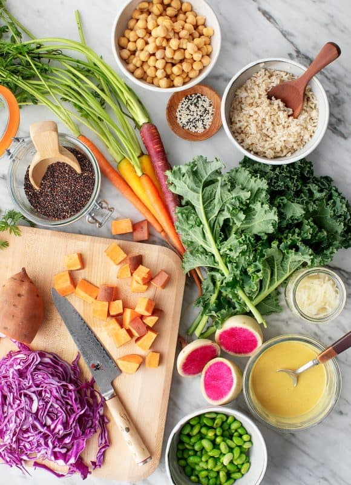

Amazing Plant-Based Lunch Recipe Below

Document
Description
Before we started calling these colorful bowls “Buddha Bowls,” I knew them as macro bowls. When we lived in Austin, I headed to a macrobiotic restaurant called Casa de Luz whenever I needed a bit of a recharge. Instead of having a fixed menu, Casa de Luz offered one rotating meal per day.
It would always be some type of buddha bowl, with a grain, a legume, blanched leafy greens, steamed vegetables, a pickled vegetable, and a delicious sauce. It may sound limiting, but I’ve honestly had some of the best sauce and vegetable pairings of my life there. Since I can’t visit Casa de Luz regularly now that we live in Chicago, I used their basic template to build my own buddha bowl recipe.
Ingredients
- 1 large sweet potato, cubed
- Extra-virgin olive oil, for drizzling
- 1 watermelon radish or 2 red radishes
- 2 medium carrots
- 1 cup shredded red cabbage
- Squeeze of lemon
- 8 kale leaves, chopped
- 2 cups cooked brown rice or quinoa
- 1 cup cooked chickpeas or cooked lentils
- ¾ cup sauerkraut or other fermented veggie
- 2 tablespoons sesame seeds or hemp seeds
- Turmeric Tahini Sauce, for serving
- Microgreens, optional
- Sea salt and freshly cracked black pepper
Instructions
- Preheat the oven to 400°F and line a large baking sheet with parchment paper.
- Toss the sweet potatoes with olive oil, salt, and pepper, and spread onto the baking sheet. Roast for 20 minutes, or until golden brown.
- Thinly slice the radish into rounds (this is best done on a mandoline), and use a vegetable peeler to peel the carrots into ribbons.
- Toss the radish slices, carrots, and shredded cabbage with a squeeze of lemon. Set aside.
- Place the kale leaves into a large bowl and toss with a squeeze of lemon and a few pinches of salt. Use your hands to massage the leaves until they become soft and wilted and reduce in the bowl by about half.
- Assemble individual bowls with the brown rice, chickpeas, kale, carrots, radishes, cabbage, sweet potatoes, sauerkraut, sesame seeds, and microgreens, if using. Season with salt and pepper and serve with the Turmeric Tahini Sauce.